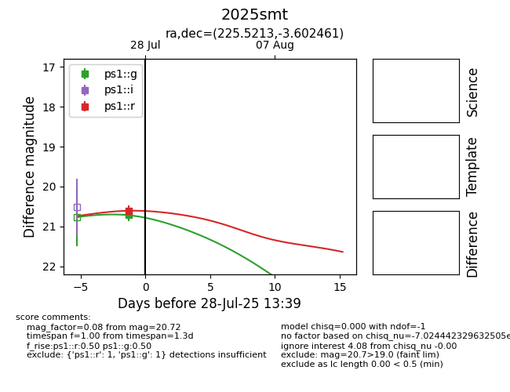

Target 2025smt at 2025-07-28 13:39, see:
YSE: ziggy.ucolick.org/yse/transient_detail/2025smt
alt names
2025smt (yse)
coordinates:
equatorial (ra, dec) = (225.5213,-3.60246)
galactic (l, b) = (353.7473,+45.98216)
photometry
last ps1::g=20.72, ps1::r=20.61
1 ps1::g, 1 ps1::r detections
